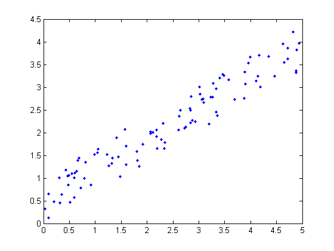
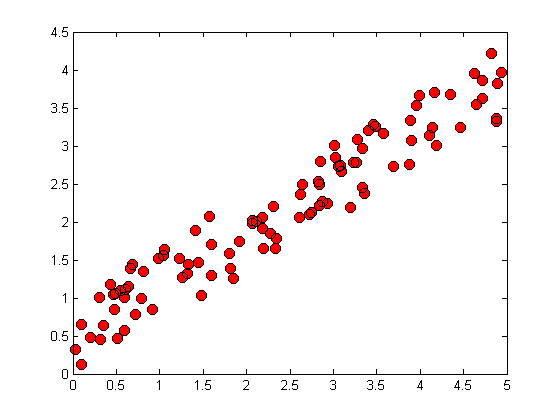
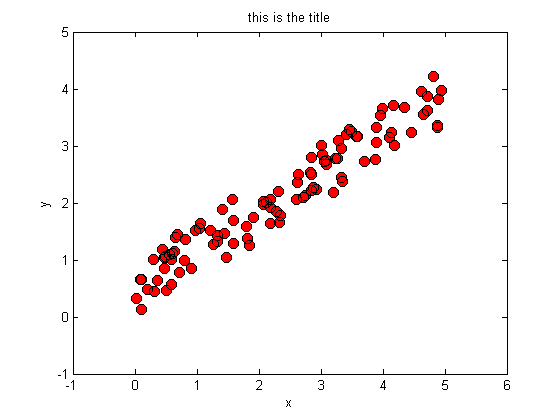
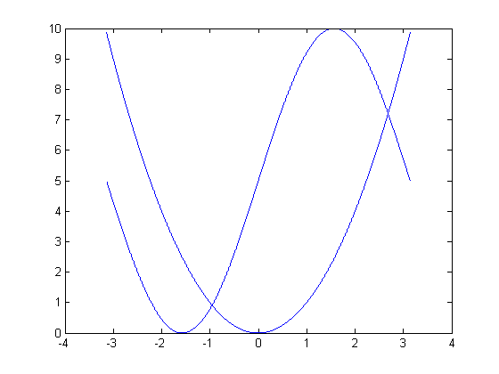
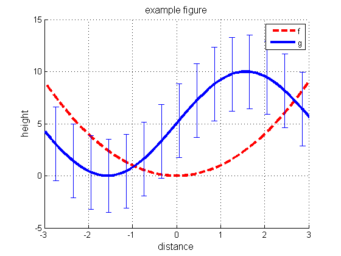
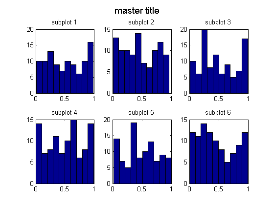
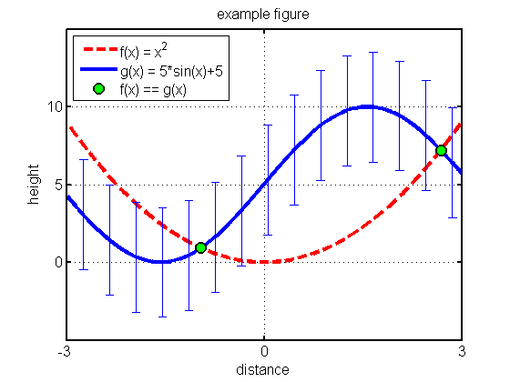

Plotting
Matlab has excellent support for data visualization and graphics with over 70 types of plots currently available. We won't be able to go into all of them here, nor will we need to, as they all operate in very similar ways. In fact, by understanding how Matlab plotting works in general, we'll be able to see most plot types as simple variations of each other. Fundamentally, they all use the same basic constructs. Rather than explain all this in detail, we will just give some useful examples; it should be pretty clear what is going on from context.
Contents
Scatter plots for 2D Data
Here we show how to plot some random 2d data.
rand('twister',0); % seed the random number generator X = 5*rand(100,1); y = rand*X + rand(100,1); % generate some synthetic data f1 = figure; % create a blank figure p1 = plot(X,y,'.'); % plot X vs y X1 = X;
We have told Matlab to plot the data in X vs the data in y and to display a blue solid dot for each data point. There are many different types of marker and line styles available. For a complete list type doc linespec. Lets make a few changes.
clf(f1); % clear the figure p2 = plot(X,y,'o','MarkerEdgeColor','k',... % plot larger red circles with black edges 'MarkerFaceColor','r',... 'MarkerSize',8);
Title and axis labels
We can specify the axis range and labels as follows.
axis([-1,6,-1,5]); xlabel('x'); ylabel('y');title('this is the title');
Plotting curves
Plotting functions (curves) is very similar to the data plotting we just performed. We evaluate the function at every point along its domain and plot the resulting x,y pairs, connecting consecutive dots. Here we plot two functions on the same set of axes. The hold on command tells Matlab to superimpose all the plots onto the same figure, rather than overwriting previous plots.
f = @(x) x.^2; % create a function of x, namely f(x) = x.^2 g = @(x) 5*sin(x)+5; % create a second function of x, g(x) = 5*sin(x) + 5 res = 0.001; % resolution of the plot domain = -pi:res:pi; % the domain of x, (i.e. points at which to evaluate f,g) f2 = figure; % open a new figure p3 = plot(domain,f(domain)); % plot f, w.r.t. x over its domain hold on; % tell Matlab to add future plots to the same set of axes p4 = plot(domain,g(domain)); % plot the second function.
Not bad for a first attempt but there are a lot of improvements we could make. Lets try again but this time, we will plot each function in its own color, change the line widths and types, the tick marks, the range of the axes, the background color, the font size, and add labels, a title, and a legend. We'll keep the functions and domain the same. Let us also add error bars to one of the functions denoting one standard deviation of the dependent variable.
f3 = figure('Color',[1,1,1]); hold on; % new figure with a white background p5 = plot(domain,f(domain),'--r','LineWidth',3); % plot a thick dashed red line p6 = plot(domain,g(domain),'-b','LineWidth',3); % plot a thick solid blue line subdomain = domain(1:400:end); % we will plot error bars at every 400th point oneSTD = std(g(domain)); % standard deviation of g(domain) oneSTD = oneSTD*ones(size(subdomain)); % make correct size, as needed by errorbar p7 = errorbar(subdomain,g(subdomain),oneSTD); % plot the error bars title('example figure','FontSize',12); % add a title xlabel('distance','FontSize',12); % label the horizontal axis ylabel('height','FontSize',12); % label the vertical axis axis([-3,3,-5,15]); % set the axis range grid on; % add grid lines legend('f', 'g');
Subplots
We often want to plot multiple subfigures within a larger one. We can write subplot(nr,nc,i) to make an nr * nc plot. This command selects the i'th such subplot, numbered from left to right, top to bottom. Kevin Murphy's subplot2 function is sometime more convenient: you write subplot2(nr,nc,i,j) to select the subplot in row i, column j. Drea Thomas' suptitle function can be used to provide a title for all the plots. Below we give an example.
figure; for i=1:6 subplot(2,3,i); hist(rand(1,100),10); title(sprintf('subplot %d', i)); end suptitle('master title')
Handles and Customization
Figure generation in Matlab is object oriented. Figures are top level objects and contain other objects such as axes and annotations. Axes further contain sub-objects such as plots and labels, which are often built up from smaller objects too. All of these objects have attributes that can be retrieved and, (for the most part) changed, using the get() and set() commands. The first parameter to these functions is a handle to an object. We can obtain such handles when we create the objects as in fig = figure.
After the fact, we can obtain the handle to the current figure by using the gcf() command or to the current set of axes by using the gca() command. We can see a list of all of the attributes of an object by typing get(handle) at the command prompt.
figure(f3); get(gca)
ActivePositionProperty = outerposition ALim = [0 1] ALimMode = auto AmbientLightColor = [1 1 1] Box = off CameraPosition = [0 5 17.3205] CameraPositionMode = auto CameraTarget = [0 5 0] CameraTargetMode = auto CameraUpVector = [0 1 0] CameraUpVectorMode = auto CameraViewAngle = [6.60861] CameraViewAngleMode = auto CLim = [0 1] CLimMode = auto Color = [1 1 1] CurrentPoint = [ (2 by 3) double array] ColorOrder = [ (7 by 3) double array] DataAspectRatio = [3 10 1] DataAspectRatioMode = auto DrawMode = normal FontAngle = normal FontName = Helvetica FontSize = [10] FontUnits = points FontWeight = normal GridLineStyle = : Layer = bottom LineStyleOrder = - LineWidth = [0.5] MinorGridLineStyle = : NextPlot = add OuterPosition = [ (1 by 4) double array] PlotBoxAspectRatio = [1 1 1] PlotBoxAspectRatioMode = auto Projection = orthographic Position = [ (1 by 4) double array] TickLength = [0.01 0.025] TickDir = in TickDirMode = auto TightInset = [ (1 by 4) double array] Title = [1074] Units = normalized View = [0 90] XColor = [0 0 0] XDir = normal XGrid = on XLabel = [1075] XAxisLocation = bottom XLim = [-3 3] XLimMode = manual XMinorGrid = off XMinorTick = off XScale = linear XTick = [ (1 by 7) double array] XTickLabel = -3 -2 -1 0 1 2 3 XTickLabelMode = auto XTickMode = auto YColor = [0 0 0] YDir = normal YGrid = on YLabel = [1076] YAxisLocation = left YLim = [-5 15] YLimMode = manual YMinorGrid = off YMinorTick = off YScale = linear YTick = [ (1 by 5) double array] YTickLabel = -5 0 5 10 15 YTickLabelMode = auto YTickMode = auto ZColor = [0 0 0] ZDir = normal ZGrid = on ZLabel = [1077] ZLim = [-1 1] ZLimMode = auto ZMinorGrid = off ZMinorTick = off ZScale = linear ZTick = [-1 0 1] ZTickLabel = ZTickLabelMode = auto ZTickMode = auto BeingDeleted = off ButtonDownFcn = Children = [ (3 by 1) double array] Clipping = on CreateFcn = DeleteFcn = BusyAction = queue HandleVisibility = on HitTest = on Interruptible = on Parent = [5] Selected = off SelectionHighlight = on Tag = Type = axes UIContextMenu = [] UserData = [] Visible = on
We can access specific properties using get(handle,'property')
get(gca,'xtick')
ans =
-3 -2 -1 0 1 2 3
The command set(handle) lists not only the attributes but also valid potential values.
set(gca)
ActivePositionProperty: [ position | {outerposition} ]
ALim
ALimMode: [ {auto} | manual ]
AmbientLightColor
Box: [ on | {off} ]
CameraPosition
CameraPositionMode: [ {auto} | manual ]
CameraTarget
CameraTargetMode: [ {auto} | manual ]
CameraUpVector
CameraUpVectorMode: [ {auto} | manual ]
CameraViewAngle
CameraViewAngleMode: [ {auto} | manual ]
CLim
CLimMode: [ {auto} | manual ]
Color
ColorOrder
DataAspectRatio
DataAspectRatioMode: [ {auto} | manual ]
DrawMode: [ {normal} | fast ]
FontAngle: [ {normal} | italic | oblique ]
FontName
FontSize
FontUnits: [ inches | centimeters | normalized | {points} | pixels ]
FontWeight: [ light | {normal} | demi | bold ]
GridLineStyle: [ - | -- | {:} | -. | none ]
Layer: [ top | {bottom} ]
LineStyleOrder
LineWidth
MinorGridLineStyle: [ - | -- | {:} | -. | none ]
NextPlot: [ new | add | {replace} | replacechildren ]
OuterPosition
PlotBoxAspectRatio
PlotBoxAspectRatioMode: [ {auto} | manual ]
Projection: [ {orthographic} | perspective ]
Position
TickLength
TickDir: [ {in} | out ]
TickDirMode: [ {auto} | manual ]
Title
Units: [ inches | centimeters | {normalized} | points | pixels | characters ]
View
XColor
XDir: [ {normal} | reverse ]
XGrid: [ on | {off} ]
XLabel
XAxisLocation: [ top | {bottom} ]
XLim
XLimMode: [ {auto} | manual ]
XMinorGrid: [ on | {off} ]
XMinorTick: [ on | {off} ]
XScale: [ {linear} | log ]
XTick
XTickLabel
XTickLabelMode: [ {auto} | manual ]
XTickMode: [ {auto} | manual ]
YColor
YDir: [ {normal} | reverse ]
YGrid: [ on | {off} ]
YLabel
YAxisLocation: [ {left} | right ]
YLim
YLimMode: [ {auto} | manual ]
YMinorGrid: [ on | {off} ]
YMinorTick: [ on | {off} ]
YScale: [ {linear} | log ]
YTick
YTickLabel
YTickLabelMode: [ {auto} | manual ]
YTickMode: [ {auto} | manual ]
ZColor
ZDir: [ {normal} | reverse ]
ZGrid: [ on | {off} ]
ZLabel
ZLim
ZLimMode: [ {auto} | manual ]
ZMinorGrid: [ on | {off} ]
ZMinorTick: [ on | {off} ]
ZScale: [ {linear} | log ]
ZTick
ZTickLabel
ZTickLabelMode: [ {auto} | manual ]
ZTickMode: [ {auto} | manual ]
ButtonDownFcn: string -or- function handle -or- cell array
Children
Clipping: [ {on} | off ]
CreateFcn: string -or- function handle -or- cell array
DeleteFcn: string -or- function handle -or- cell array
BusyAction: [ {queue} | cancel ]
HandleVisibility: [ {on} | callback | off ]
HitTest: [ {on} | off ]
Interruptible: [ {on} | off ]
Parent
Selected: [ on | off ]
SelectionHighlight: [ {on} | off ]
Tag
UIContextMenu
UserData
Visible: [ {on} | off ]
We can test if a variable is a valid handle or not with the ishandle() method. Figure handles are actually just integer values starting at 1 that have been registered with the root graphics object.
Below, we use the set() method to change a number of axes attributes. Multiple attributes can be changed in one command, (or in multiple commands if you prefer) and the name of the attribute always precedes its new value.
figure(f3); set(gca,'box' ,'on' ... % draw a box around the figure ,'LineWidth', 2 ... % increase the line width ,'FontSize' ,12 ... % increase the font size ,'XTick' ,[-3,0,3]... % only these x-ticks ,'YTick' ,[0,5,10]); % only these y-ticks Xequal = domain(abs(f(domain) - g(domain)) < 2*res); % find where the two graphs meet p8 = plot(Xequal,f(Xequal),'o','MarkerFaceColor','g'... % plot green circles there ,'MarkerEdgeColor','k'... % black border around circles ,'LineWidth' , 2 ... % thicken black border ,'MarkerSize' ,10); % increase the circle size legend([p5,p6,p8],{'f(x) = x^2','g(x) = 5*sin(x)+5','f(x) == g(x)'},'Location','NorthWest'); % Prevent close commands from closing this figure. We will use it again later. %set(f3,'HandleVisibility','off');
As you can see, most plotting commands, such as legend() above, have many possible parameters and parameterizations. It would be redundant to go into them all here; type doc legend ,for example, to see more information on the legend command.
There are Matlab functions designed to make function plotting easier such as fplot() , ezplot() , ezsurf() , ezmesh() , ezcontour() , etc... While these can be useful for quick and dirty figures, they can make customization more difficult and so we recommend using, and learning to use, plot() instead. All of these functions take function handles as arguements and the ez*** functions auto set the axes limits for you.
The loglog() , semilogx() , and semilogy() functions are useful for plotting on logarithmic scales. However we can achieve the exact same effect by plotting with plot() and calling set(gca,'XScale','log') and/or set(gca,'YScale','log') . We can reverse the direction of an axis with set(gca,'YDir','reverse') or set(gca,'XDir','reverse') and move an axis with set(gca,'YAxisLocation','right') or set(gca,'XAxisLocation','top') . Recall that we can find the names of these properties with get(gca) or the valid values with say set(gca,'YDir') .
Tickmarks
We can change the tick marks and their labels as follows on the axes. For example,
figure(f1); xs = linspace(min(X1), max(X1), 5); set(gca, 'xtick', xs, 'xticklabel', {'a','b','c','d'}) % gca = get current axis
Subscript indices must either be real positive integers or logicals. Error in ==> plotting at 159 xs = linspace(min(X1), max(X1), 5);
When we have long strings for the tick marks, we can use xticklabelrot, which prints them at an angle to save space.
figure(f1); xticklabelRot({'foo','bar',22,'apple','long string'}, 45)
Histograms
Histograms are one of the most useful plots for 1d data, and for probability mass functions. Below we display a histogram of a hypothetical class grade distribution.
figure; grades = fix(normrnd(70,10,100,1)); hist(grades); % plot the histogram xlabel('percent'); ylabel('count'); title('grade distribution'); set(gca,'XLim',[0,100],'YGrid','on'); % gca = get current axis set(gca,'YMinorTick','on');
Here we organize marks into bins representing letter grades. We use the extremely quick histc() function to count the number of data points that fall between specified edges. Once we have obtained the counts, we can visualize them with the bar() function.
figure; bins = [0,50,55,60,64,68,72,76,80,85,90,inf]; % The bins letters = {'F','D','C-','C','C+','B-','B','B+','A-','A','A+'}; % The labels counts = histc(grades,bins); % count grades bar(counts(1:end-1)); % plot counts set(gca,'XTickLabel',letters,'Ygrid','on'); % set tick labels xlabel('grade'); ylabel('count'); title('grade distribution'); set(gca,'YMinorTick','on')
Plotting 1d probability density functions
As an example of some other functions, we make a fancy plot of the Gaussian pdf in which we shade the tails using an area() plot, and add a few vertical bars using the stem() command.
figure; domain = -4:0.01:4; plot(domain,normpdf(domain),'-r','LineWidth',3); hold on % We shade two regions with the area command L = fix(length(domain))/3; R = 2*fix(length(domain))/3; area(domain(1:L),normpdf(domain(1:L))); area(domain(R:end),normpdf(domain(R:end))); % Now add gratuitous vertical lines stem([-0.7,0.1,0.4],normpdf([-0.7,0.1,0.4]),'LineWidth',2); axis([-4,4,0,0.5]); set(gca,'XMinorTick','on'); set(gca,'YMinorTick','on');
Plotting images
The imagesc() function can be used to view an image. (If you have the image processing toolbox, you can use imshow instead.)
load mandrill % built-in image figure; imagesc(X); % display it axis image % window dimensions appropriate for an imag map = colormap(gray); % a possible color scheme. axis off
Heatmaps and Hinton diagrams
We can also use imagesc to make heatmaps of a 2d matrix.
figure;
rand('twister',1);
X = randn(10,10);
imagesc(X);
colorbar
Often it is preferable to use hintonDiagram (named after Geoff Hinton, who used this type of display to plot the weight matrix of a neural network), where the size of the square represents the magnitude, and the color represents the polarity (red = positive, green = negative).
figure; hintonDiagram(X)
Saving and Printing
We can print figures and save them as any major graphics type from the file drop down menu of a figure window. Also here is the 'export setup' option which opens a window where the default figure resolution and size settings can be set. Newer versions of Matlab also let you automatically increase the line widths and font sizes of the figures you are exporting. To save or print programatically, we can use the print() function. Type doc print for more details.
%figure(gcf); %print -djpeg test.jpg %print(gcf, '-djpeg', 'test.jpg'); % equivalent, useful if filename is a variable
If you find that there is too much white space surrounding the exported figure, (a particular problem when exporting to pdf) try changing the figure's paper size before exporting, with the following commands.
%pos = get(gcf,'Position'); %set(gcf,'PaperSize',pos(3:4)); %set(gcf,'PaperPositionMode','auto');
Matt Dunham has written a handy function pdfcrop that automatically ensures the paper size is set equal to the figure size, so that pdf files have a tight border.
%pdfcrop(gcf); %print(gcf, '-dpdf', 'test.pdf');
Another very useful function is exportfig which will automatically make your fonts larger, etc, before saving to a file for use in a publication.
PlaceFigures
When many figures are generated at once, they will often overlap each other. You can manually drag them around, but Matt Dunham's placeFigures function automatically places the figures on the screen for you in a way that allows you to see them all simultaneously. Simply call placeFigures after generating the figures. You can specify the layout manually with say placeFigures('nrows',2,'ncols',4) , create new blank figures with the 'newfigs' option and display figures on a second monitor with the 'monitor' option. See the function documentation for more information. (Note that by automatically creating this web page with publish, the layout of the figures looks somewhat different than on the screen.)
%close all %for i=1:10 % figure; imagesc(rand(10,10)); %end placeFigures